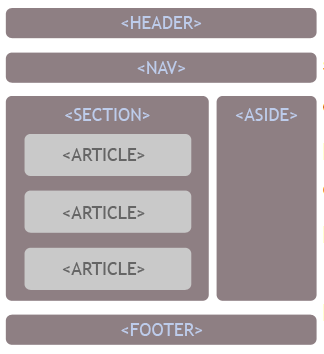

Etiquetas incorporadas por HTML5
Etiquetas estructurales
Que estructuran una página dando información a los motores de búsqueda
- ARTICLE:
- Especifica un artículo, es decir, una unidad de contenido.
- SECTION:
- Es una sección dentro de un documento.
- HEADER:
- La cabecera de una página.
- FOOTER:
- El pie de página o informaciones que formen el pie de una sección.
- ASIDE:
- Es una parte de la web que muestra contenido accesorio, generalmente colocado en un panel lateral.
- NAV:
- con el que colocar el navegador principal de una página web.

Etiquetas que suministran otros tipos de informaciones a los motores de búsquedas
- BDI:
- Define una parte del texto que debe ser entendido aparte de la línea de contenido que se esté escibiendo.
- MENU:
- una lista de opciones que formen parte de un menú.
- COMMAND:
- Uno de los elementos o botones de un menú de opciones.
- DETAILS:
- Detalles o información suplementaria que se puede ver u ocultar por el usuario.
- SUMMARY:
- Encabezamiento para detalles especificados en DETAILS.
- FIGURE:
- es un contenido que ilustre el artículo, como fotos, diagramas, ilustraciones, etc.
- FIGCAPTION:
- El pie o explicación de un FIGURE.
- HGROUP:
- Un grupo de encabezamientos, útil cuando se tiene diversos bloques de encabezamientos del mismo nivel H1, H2...
- MARK:
- Un texto o información que es remarcable.
- TIME:Para escribir una fecha, una hora o ambas.
- WBR:
- Define un posible salto de línea.